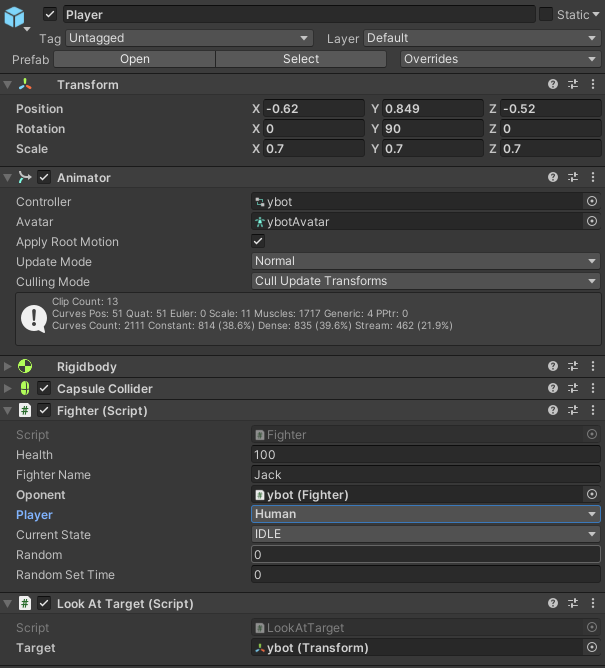
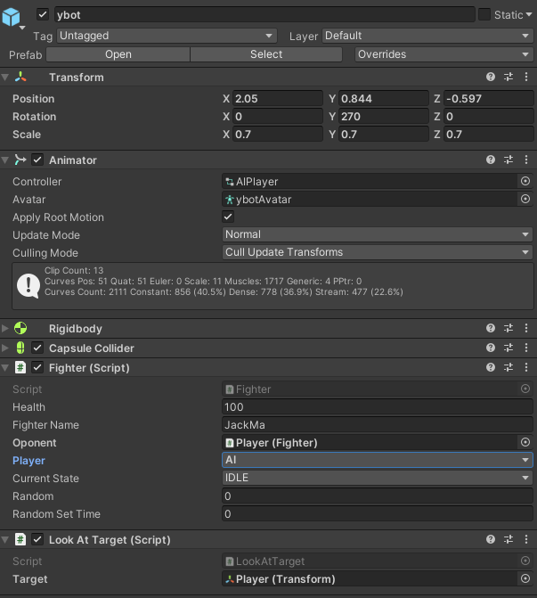

How does it work?
In this offline mode, player will play with the bot that we made with C# and state machine. When it comes to character behavior design, every Unity object has an inspector tab for its own for developer to add components, which will decide the behavior of the object.
For character object, we need to add multiple components. Picture 2 show all the part that we have put into the character object in this project.
Transform part is to change the position, rotation, and the scale of the character, how the character scale and much more.
Animator part is to allows character component to know it what animation it needs to do, this tab require the animation controller (this file decide the condition for each animation).
Rigidbody and collider are part that allow the physic to affect to the object
Fighter script is our premade script that have the C# code that take the input and let the character act based on it.
The last component is the LookatTarget script, which is to make the character keep facing the other object during the game (in this case is the bot.)
The same concept and implementation are applied to the bot object, with the fighter script in the part, we allow people to just modify the part to change that specific object from human object to AI object. But in this case, we are trying to make the bot act based on the player movement, we have put the conditions based on the distances for both object to player object, and based on the current state of the player, which show the exact state of player object.
Moreover, the game is controlled with the C# file which name BattleController.cs, which will make the time of the game run and decide the round and time to the game.
